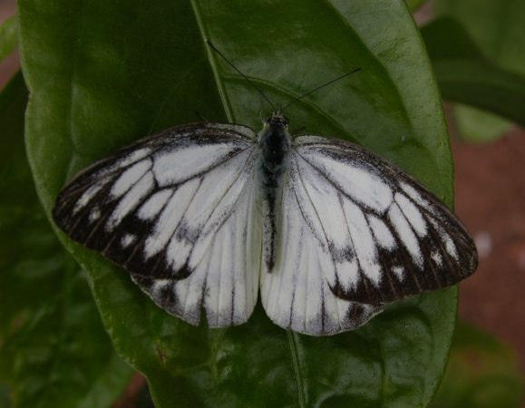

कॉमन गल तितलीCommon Gull
Cepora nerissa · Pieridae · INS-0101

- Scientific name वैज्ञानिक नाम
- Cepora nerissa (Fabricius, 1775)
- Family कुल
- Pieridae
- Hindi हिंदी
- कॉमन गल तितली
- Local names स्थानीय नाम
- common gull, common gull butterfly, gull butterfly
- Status here यहाँ की स्थिति
- native
- Movement आवागमन
- Resident, here all year
- IUCN IUCN
- not evaluated
- Review समीक्षा
- audited and independently read
When to look कब देखें
Present all year. साल भर मौजूद।
Uses and possibilities उपयोग और संभावनाएँ
Drawn from the documented uses in the profile below, where each is labelled traditional, current or a research lead. All uses →
Tell it apart from इनसे अलग पहचानें
कॉमन गल तितली / Common Gull
Cepora nerissa (Fabricius, 1775) — Pieridae
कॉमन गल तितली — पूर्वी उत्तर प्रदेश के खुले मैदानों, बंजर जगहों और कृषि क्षेत्रों में बहुत आम रूप से पाई जाने वाली एक छोटी सफ़ेद तितली है। इसके पंख सफ़ेद होते हैं जिन पर नर के पंखों के किनारों पर काली धारियाँ होती हैं, जबकि मादा के पंखों पर अधिक काले धब्बे और पैटर्न होते हैं। यह तितली तेज़ी से उड़ती है और खुले इलाकों में अकेले या कुछ खेतों में समूहों में मिलती है। इसकी इल्ली सरसों (सब्जियों की सरसों) की पत्तियों पर पाई जाती है।
Quick Identification त्वरित पहचान
| Feature | Description |
|---|---|
| Size | Small to medium butterfly (body length 16–20 mm; wingspan 45–55 mm) |
| Male Colour | Pure white upper surface with black markings only on wing tips and margins |
| Female Colour | White upper surface with more extensive black markings and patches, especially on forewing base |
| Underside | Both sexes show pale yellowish or whitish underside with faint grey or yellow markings |
| Flight | Swift, direct flight; flies low over open ground |
Field tip: Look for small white butterflies with black-tipped wings flying rapidly over grassland and open areas. Males are nearly pure white with just black wingtips; females are more distinctly marked with black. The swift flight and white coloration distinguish this from other small whites in the region.
Morphology आकारिकी
Biometrics (typical measurements in northern Indian plains):
| Measurement | Range |
|---|---|
| Body length | 16–20 mm |
| Wingspan | 45–55 mm |
| Forewing length | 21–25 mm |
Body: Small, slender, black-fuscous body with clubbed antennae.
Wings (dorsal):
- Male: Primarily white upper surface; apical region (wingtip) with black markings; black marks along the wing margin and cell.
- Female: White upper surface with more extensive black markings on the apex (wingtip) and along the costal margin of the forewing; hindwing margins have black spots.
Wings (ventral): Both sexes have a predominantly pale yellowish-white underside with faint grey or pale yellow markings, particularly visible on the forewing.
Sexual Dimorphism: Females are more distinctly marked with black than males.
Behaviour & Ecology व्यवहार और पारिस्थितिकता
The Common Gull is a swift, low-flying butterfly of open grasslands and agricultural areas. It prefers wide-open habitats and is rarely encountered in forest edges or closed vegetation. Males patrol rapidly over open ground, searching for females. The species shows a preference for hot, sunny conditions and is most active during the warmest hours of the day. It is a generalist butterfly capable of utilizing a wide range of Brassica (mustard) crops and related wild plants, making it particularly abundant in agricultural areas during and after the monsoon season.
Life Cycle / Phenology जीवन चक्र
| Stage / Season | Event |
|---|---|
| Egg | Laid singly or in small groups on Brassica and related plants; yellow; hatch 4–6 days |
| Larval (Caterpillar) | 4–5 instars; mature larva 18–22 mm; greenish-yellow with black bristles; development 14–18 days |
| Pupa | Angular chrysalis; pale green or grey; 10–14 days to emergence |
| Adult | Year-round with peak abundance June to November; multiple overlapping generations; lifespan 2–3 weeks |
Host Plants or Prey आहार
Larval host plants:
- Brassica oleracea (Cabbage / बंदगोभी)
- Brassica rapa (Mustard greens / सरसों)
- Raphanus sativus (Radish / मूली)
- Cardamine species (related wild crucifers)
Adult nectar sources:
- Various wild flowers, weeds, and cultivated flowers throughout open habitats.
Predators / Natural Enemies शत्रु
- Birds: Insectivorous birds, particularly small warblers and flycatchers.
- Parasitoid Wasps: Small wasps parasitize caterpillars and pupae.
- Spiders: Orb-weaving spiders in open areas.
Agricultural / Human Relevance कृषि प्रासंगिकता
Crop pest. The Common Gull larvae feed on Brassica crops (cabbage, mustard, radish) and can cause significant damage to young plants and seedlings. Farmers often use netting or organic pesticides to protect Brassica crops from caterpillar damage.
Pollinator. Adult butterflies are important pollinators of wild flowers and weeds in agricultural landscapes.
Expected Locally स्थानीय रूप से अपेक्षित
Not a field record. Written from published accounts for eastern Uttar Pradesh. No confirmed local sighting yet — if you have seen it, that is what the atlas needs.
अभी तक स्थानीय पुष्टि नहीं। यह विवरण प्रकाशित स्रोतों से है, किसी अवलोकन से नहीं।
To be expected throughout Basti district in open grasslands, wastelands, and cultivated Brassica fields. Look for small white butterflies with black-tipped wings flying rapidly and low over open ground. Males are nearly pure white; females are more distinctly marked. Most abundant from June to November, particularly in areas with Brassica cultivation. Peak activity during hot, sunny hours. The first local record would be a photograph with place and date; send it to the atlas contact on the About page.
Distribution वितरण
Global range: Widespread across the Indo-Oriental region, including India, Sri Lanka, Myanmar, and Southeast Asia.
In India: Distributed throughout the peninsula and the Gangetic plain.
In Uttar Pradesh: Abundant resident in all districts with suitable grassland and cultivated areas.
In Basti district / eastern UP: Expected in all open habitats and cultivated areas throughout the year.
Research Questions शोध प्रश्न
Anyone can investigate these | कोई भी इन प्रश्नों की जाँच कर सकता है
- What percentage of Common Gull caterpillars on untreated Brassica crops are parasitized by native wasps? — Collect pupae and monitor emergence.
- Do males show any preference for specific microhabitats within open grasslands when patrolling? — Map male flight paths and territoriality.
- How does pesticide spray timing affect caterpillar survival and adult emergence rates? — Compare treated and untreated plots.
- Which Brassica crop variety (traditional vs. hybrid) suffers more damage from Common Gull caterpillars? — Conduct damage surveys on different varieties.
- How many generations of Common Gulls occur in Basti during a calendar year? / बस्ती में एक साल में कॉमन गल तितली की कितनी पीढ़ियाँ बनती हैं? — Track emergence timing throughout the season.
Similar Species मिलती-जुलती प्रजातियाँ
| Species | How to tell apart | हिंदी |
|---|---|---|
| Common White (Pieris canidia) | Slightly larger; black markings confined mainly to the apex; veins not distinctly marked | सामान्य सफ़ेद तितली — बड़ी |
| Small Grass Yellow (Eurema brigitta) | Smaller; yellow ground colour with black markings; very fast flight | छोटी पीली तितली |
Field rule: Small white butterfly with black-tipped wings and swift, low flight over open grassland, is the Common Gull.
Taxonomy & Classification वर्गीकरण
Original description. Johann Friedrich Wilhelm Fabricius described the Common Gull as Papilio nerissa in 1775 in his Systema Entomologiae (p. 444). The type locality is India. The genus Cepora was established by Billberg in 1820. The species name nerissa is derived from Nereid nymphs of Greek mythology.
Subspecies. Multiple subspecies are recognized; C. n. nerissa is the nominate and the subspecies present in India and UP.
Family and order placement. Order Lepidoptera, family Pieridae (whites and yellows), subfamily Pierinae.
Phylogenetic notes. Cepora is an Indo-Oriental genus of small white butterflies, closely related to Pieris and other Eurasian genera.
IUCN status rationale. Not evaluated. Common and widespread, under no conservation threat.
Photo Gallery फोटो गैलरी
No photos yet — add field photos to media/species/common_gull/ and run node scripts/sync_photos.js.
Photos needed आवश्यक फोटो
- [ ] Adult male (नर)
- [ ] Adult female (मादा)
- [ ] Caterpillar on host plant (इल्ली)
References संदर्भ
- Fabricius, J.C. (1775). Systema Entomologiae. Flensburgi et Lipsiae, p. 444. [original description]
- Bingham, C.T. (1905). The Fauna of British India, including Ceylon and Burma. Butterflies. Vol. 1. Taylor & Francis, London.
- Kehimkar, I. (2008). The Book of Indian Butterflies. Bombay Natural History Society, Mumbai.
- Kunte, K. (2000). Butterflies of Peninsular India. Universities Press, Hyderabad.
- Zoological Survey of India (2010). Fauna of Eastern Uttar Pradesh.
- GBIF Occurrence Data — Cepora nerissa, Uttar Pradesh (2010–2025).
Source file: species/fauna/insects/common_gull.md